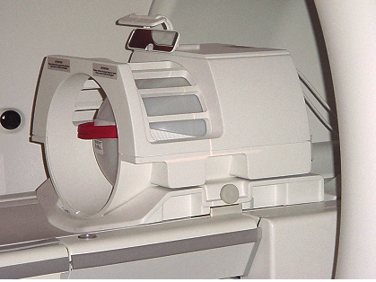

The phantom contains Dimethyl Silicone fluid. DO NOT INGEST.
Eye contact may cause minor irritation.
If a leak or spill occurs wipe up or absorb in inert material
and place in container for disposal. Incineration or landfill is
the recommended disposal method.
Warning
POISON HAZARD!
Signa 1.5T and 1.0T System Phantoms CONTAINS NICKEL, A SUSPECTED
CARCINOGEN.
DO NOT INGEST. DISPOSE OF AS A HAZARDOUS WASTE ACCORDING
TO STATE AND FEDERAL REGULATIONS.
The procedure below provides a qualitative method of testing
the reference maps generated to insure basic functionality. The process
should be run on each of the reference maps generated. The process
to functional check each Field Reference Map is as follows:
Setup phantom and Select High Order
Shim Series
Run back-to-back shim scans till the
shim converges
Offset a shim channel and run another
shim iteration
Confirm re-convergence of shim channel
offset
Repeat for all other shim channels
Procedure
Note:
For TwinSpeed: this procedure should be run for 48 cm
FOV on the Body Coil WB Gradient, 48 cm FOV on the Body Coil ZM Gradient,
28 cm FOV on the Head Coil WB Gradient, and 28 cm FOV on the Head
Coil ZM Gradient.
(For 3T/94) : only 1 gradient mode will be used.
Select New Pt.
Patient ID: geservice
Weight 111 lbs
Select GE and then Other Protocols
Select High Order Shim 3T and the series
that corresponds to the FOV being tested.
Select Accept.
Place correct phantom in coil to be tested:
(For the 48 cm FOV Field Map) : Setup the Body
TLT Sphere Phantom on the patient cradle. (See Illustration 1.)
Figure 1. SETUP FOR THE 48CM FOV FIELD MAP - BODY TLT SPHERE ON PADS
(For the 28 cm FOV Field Map) : Install the
Head Coil and setup the Body TLT Sphere inside the Head Coil. (See
Illustration 2.)
Figure 2. SETUP FOR THE 28CM FOV FIELD MAP - BODY TLT SPHERE IN HEAD
COIL

Select Save Series and then select Scan. The Shim User Interface should appear after the
scan stops Figure 3.
Figure 3. BASIC SHIM USER INTERFACE
Position the ROI (use an oval shape) within the center of the
spherical phantom image covering approximately 80% of the volume in
all three planes. To move the ROI, click and drag with the left mouse
button inside the ROI. To change the size of the ROI, click and drag
with the left mouse button outside the ROI.
Select Advanced, then Calculate
Shim buttons. The user should see the “Advanced”
screen (Figure 5) that contains the specific shim information for
each shim channel. See Figure 4 and Figure 5.
Figure 4. BASIC SHIM USER INTERFACE AFTER CLICKING [CALCULATE SHIM]Figure 5. ADVANCED SHIM USER INTERFACE
Note:
The screen will display the Current RMS and Predicted
RMS shim values shown on the Basic screen to compare to the next iteration.
Look at the Shim current deltas for each High Order Shim Channel.
Convergence for these shim channels will be defined as asking for
less than 30mA (0.03A) of current change. The User Interface displays
units in Amps.
If the Advanced Shim User Interface screen is open (Figure 5), click on Download, then in the Basic Shim User Interface screen
(Figure 3), click on [Quit].
Select Scan again and DO NOT pre-scan
between iterations.
Repeat Step 1 through Step 8 for remaining
references Maps. All references maps for a system should be tested.
Note:
For TwinSpeed: this procedure should be run for 48 cm
FOV on the Body Coil WB Gradient, 48 m FOV on the Body Coil ZM Gradient,
28 cm FOV on the Head Coil WB Gradient, and 28 cm FOV on the Head
Coil ZM Gradient.
(For 3T/94) : only 1 gradient mode will be used.
Note:
This typically only
requires 2-3 iterations. More than 5 iterations may indicate a problem
with the quality of the Field Reference Map(s). If the overall system
shim or eddy current compensation are out of spec or a random system
issue occurred during the creation of the Field Reference Map(s),
then the quality of the Field Reference Map may be the issue. The
first step should be to test the other Field Reference Maps to see
if the problem exists for all or just a single Field Reference Map.
If the non-convergence is associated with only one of the Field Reference
Maps, then recreate the reference map in question per the HOShim Cal Ref Map Creation
and Procedures. If the non-convergence is associated
with all of the Field Reference Maps and they had worked previously
then the issue is hardware related i.e. shorted or open shim coils,
defective shim power supply, defective shim cable or defective penetration
panel filters.
Note:
This typically only requires 2-3 iterations. More than 5 iterations
may indicate a problem with the quality of the Field Reference Map(s).
If the overall system shim or eddy current compensation are out of
spec or a random system issue occurred during the creation of the
Field Reference Map(s), then the quality of the Field Reference Map
may be the issue. The first step should be to test the other Field
Reference Maps to see if the problem exists for all or just a single
Field Reference Map. If the non-convergence is associated with only
one of the Field Reference Maps, then recreate the reference map in
question per the High Order Shim procedures. If the non-convergence is associated with all of the
Field Reference Maps and they had worked previously then the issue
is hardware related i.e. shorted or open shim coils, defective shim
power supply, defective shim cable or defective penetration panel
filters.
Convergence is achieved when one of the
following two conditions is met:
The difference in Current RMS between two
consecutive runs is less than 1 Hz (see Figure 4).
The Advanced Interface (see Figure 5) is asking for less than 30mA (0.03A) of Shim Current Delta.
Once convergence is achieved, the following steps will be repeated
for each channel until all shim channels have been functionally tested.
Only one reference map/setup must be tested.
Go to the “Advanced” screen and disable all channels
except for the one to be tested by clicking on the button next to
each channel. This process will start testing the ZY channel, refer
to Shim Channel Sequence & Delta Shim Current Data, 197192.pdf for the sequence for the remaining channels.
Enter a 100mA offset by typing 0.1 in the current delta field
for the channel being tested and select Done from the basic user screen to download and exit the interface.
Select Scan to run the shim scan with
the current offset. The user interface will appear at the end of
the scan.
Select Advanced to open the “Advanced”
screen again. Make sure only the ZY channel is enabled (may need
to deselect the other channels again, channels will stay disabled
if they are deselected prior to using Calculate shim but not after).
Select Calculate Shim and look at the
change requested for the ZY channel. The requested current change
should be opposite in polarity from the offset entered in Step 11.b and should be about 70mA in amplitude signifying at least a 70%
requested correction of the shim offset. Typically for most channels
you will see much better than this. Record the delta current requested
in the supplied data sheets: 197192.pdf.
Select Done to download current delta
and exit interface.
Select Scan and repeat Step 11.d through Step 11.f until at least 90% of the shim offset entered in step 10 is recovered.
Add the delta currents from each iteration and record in the data
sheets 197192.pdf. The total recovered current should
be between 0.090 and 0.100 amps. See the example in the last row of
the table.
Note:
Fewer than three iterations should be required, with 1-2
iterations typical. Delta currents < 40 ma on the 1st iteration
or delta currents that change polarity indicate a shim channel problem
of either a dead channel or possibly an unstable shim output. This
assumes the system passes SPT stability and is clean of image artifacts.
Repeat Step 11.a through Step 11.g for each of the
other high order shim channels.
Note:
Channel Z3 cannot be adjusted on 1.5T systems. Do not
attempt to check this Channel.
Finalization
Put away any phantoms or tools used.
Do a check scan to insure the scanner is ready for patient scanning.


 Note:
Note: